Bài 1: Thao tác cơ bản với tệp tin
⬅ Quay lại Trang Dự án🧠 Phân tích học thuật (Mức 4)
Thay vì chỉ thao tác tạo và xóa tệp tin một cách máy móc, tôi đã áp dụng tư duy quản lý dự án phần mềm vào bài thực hành này. Đối với một kỹ sư AI tương lai, không gian làm việc khoa học là nền tảng bắt buộc trước khi xử lý các tập dữ liệu lớn. Các quyết định tổ chức tệp tin được dựa trên 3 nguyên tắc:
-
1. Tư duy phân cấp (Hierarchical Structure): Tổ chức thư mục theo dạng cây (Tree) - tương tự cấu trúc dữ liệu đang nghiên cứu. Việc chia nhỏ từ thư mục gốc xuống thư mục con (như
Tailieu) giúp truy xuất tài nguyên nhanh chóng, dễ dàng mở rộng khi thêm các tập lệnh hay model AI mới sau này. -
2. Cấp thiết về quy chuẩn đặt tên (Naming Convention): Toàn bộ tệp tin (VD:
GhiChuQuanTrong.txt) được đặt tên viết liền không dấu, theo định dạng PascalCase hoặc CamelCase. Đây là thói quen sống còn để tránh các lỗi không đọc được đường dẫn (Path Error) thường gặp khi biên dịch mã nguồn C++ hoặc khi chạy môi trường ảo trong Python. -
3. Quản trị vòng đời dữ liệu: Kiểm soát chặt chẽ trạng thái tệp tin. Hiểu rõ bản chất cấp phát và giải phóng vùng nhớ giúp tôi quyết định chính xác khi nào nên xóa tạm thời để dự phòng, và khi nào nên dùng
Shift + Deleteđể dọn dẹp triệt để không gian ổ đĩa cho laptop.
📸 Trình diễn thao tác thực hành
Mở File Explorer
Khởi động trình quản lý tệp tin File Explorer trên hệ điều hành Windows để bắt đầu phiên làm việc.
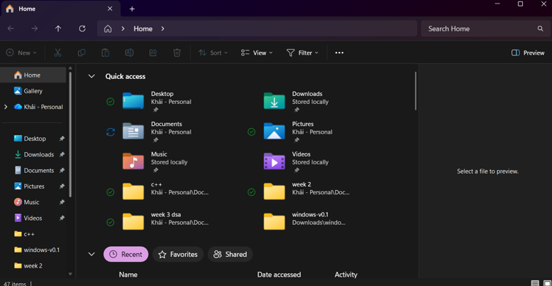
Truy cập ổ đĩa/thư mục
Điều hướng tới ổ đĩa chứa không gian làm việc cá nhân (ví dụ: Windows C:).
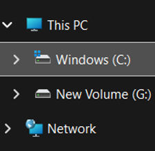
Tạo thư mục mới
Khởi tạo thư mục gốc mang tên ThucHanh_NguyenDucKhai thông qua menu chuột phải (New > Folder).
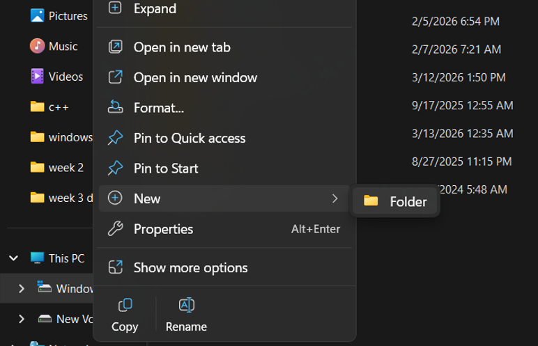
Vào thư mục vừa tạo
Mở thư mục gốc vừa khởi tạo để chuẩn bị một không gian trống cho các thao tác lưu trữ tiếp theo.
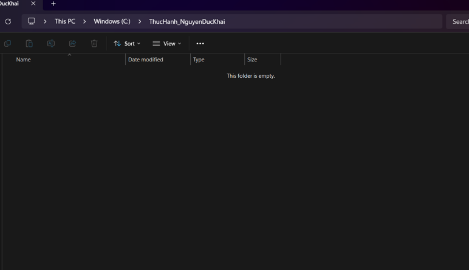
Tạo tệp tin văn bản
Khởi tạo một tệp tin văn bản mới định dạng TXT/Word ngay trong thư mục đang làm việc.
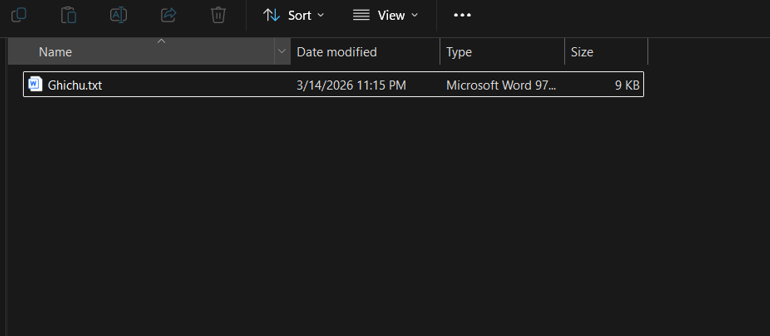
Đổi tên tệp tin
Sử dụng chức năng Rename (F2) để đặt lại tên tệp thành GhiChuQuanTrong.txt theo đúng quy chuẩn không dấu.
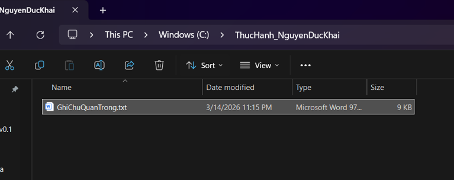
Tạo thư mục con
Tiếp tục khởi tạo thư mục con mang tên "Tailieu" để thực hành kỹ năng phân cấp dữ liệu.
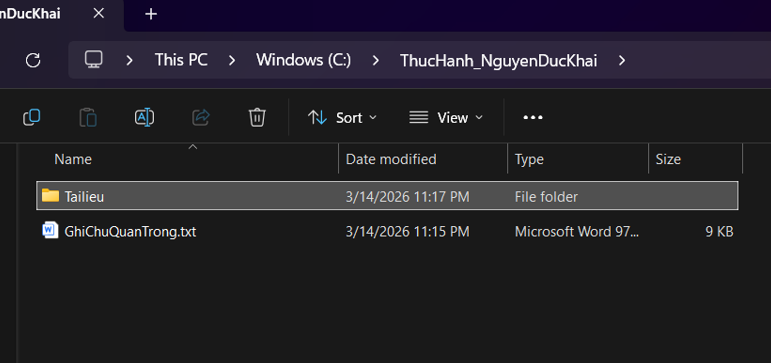
Sao chép tệp tin (Copy)
Sử dụng tính năng Copy để nhân bản tệp GhiChuQuanTrong.txt, chuẩn bị di chuyển vào thư mục con.
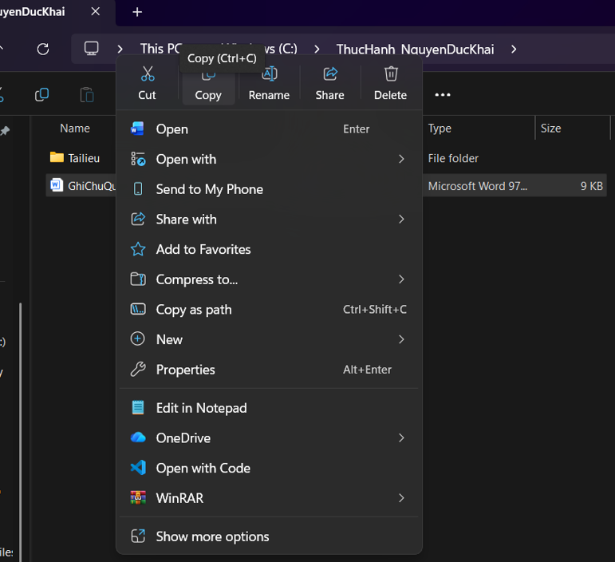
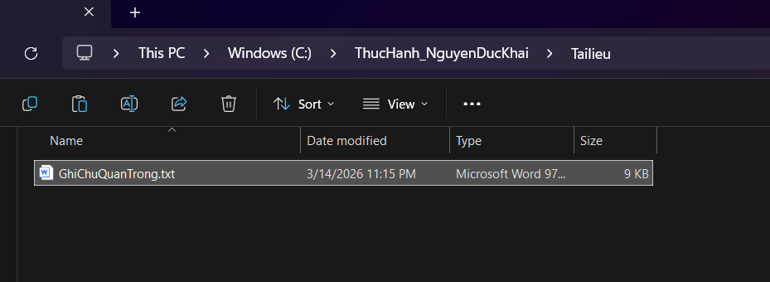
Di chuyển tệp tin (Cut)
Dán tệp đã sao chép vào thư mục Tailieu, đồng thời đổi tên thành Dichuyen.txt để minh họa thao tác di chuyển.
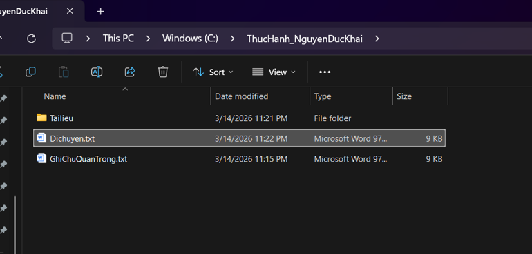
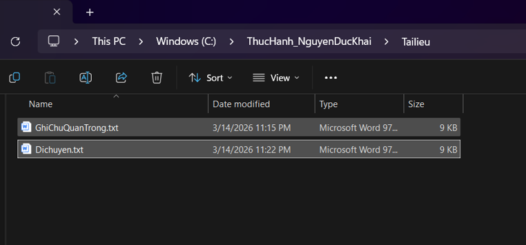
Xóa tệp tin
Thực hiện lệnh Delete để đưa tệp tin không còn sử dụng vào Recycle Bin (Thùng rác), một hình thức xóa tạm thời.
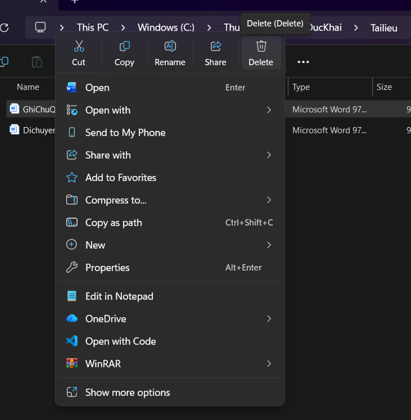
Xóa vĩnh viễn
Sử dụng tổ hợp phím Shift + Delete để giải phóng hoàn toàn không gian bộ nhớ mà không đưa qua Thùng rác.
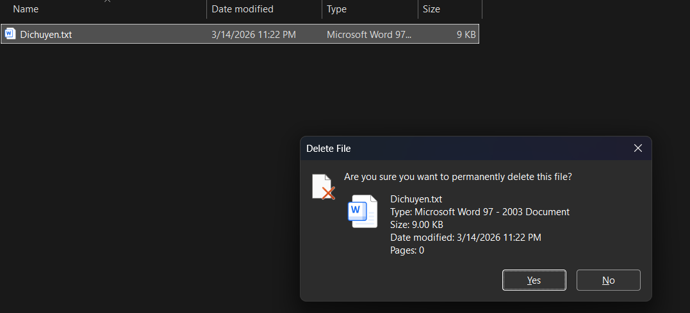
Khôi phục từ Thùng rác
Truy cập Recycle Bin và sử dụng tính năng Restore để lấy lại an toàn tệp tin đã bị xóa nhầm ở bước 10.
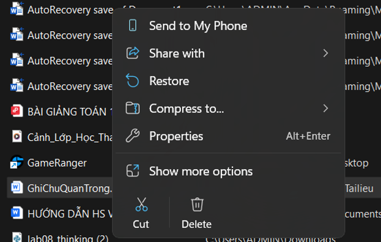
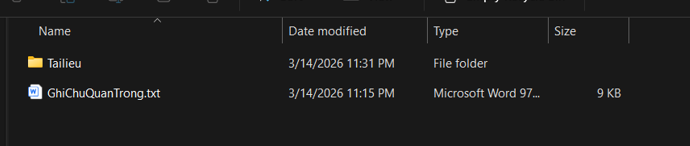